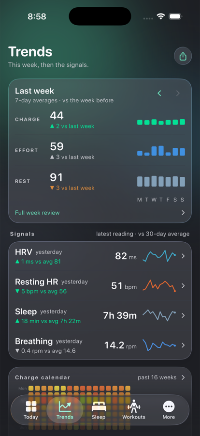
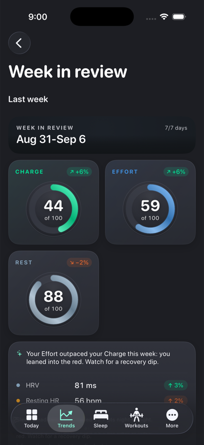
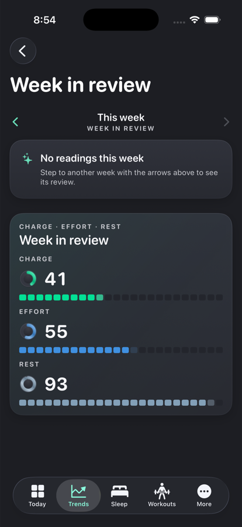
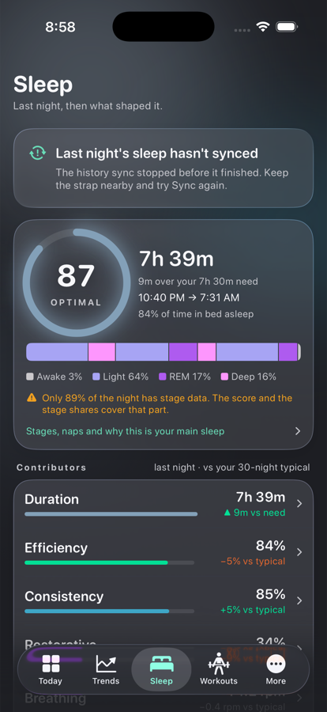
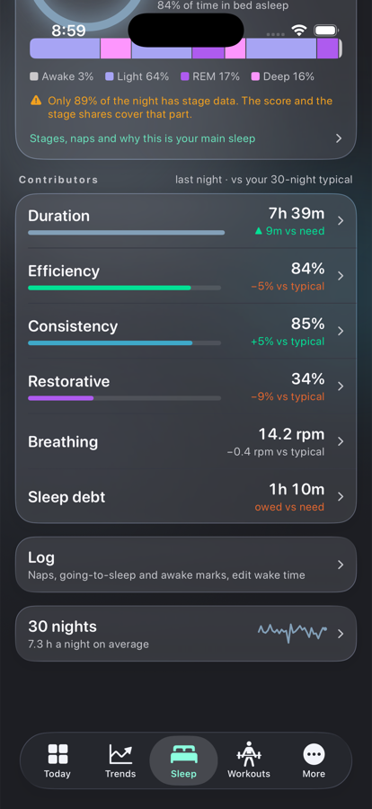
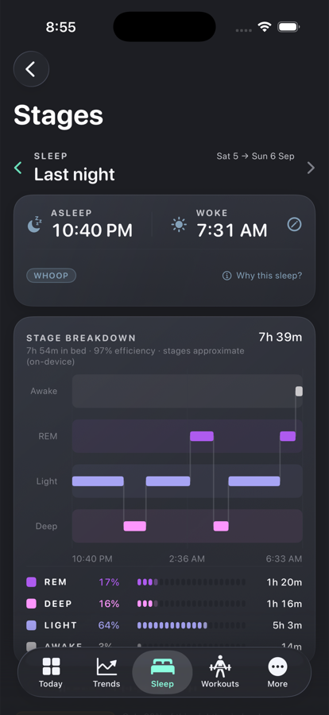
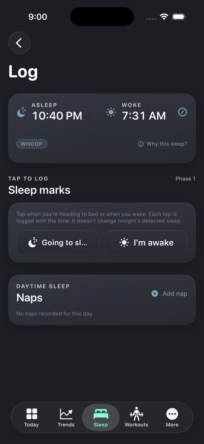
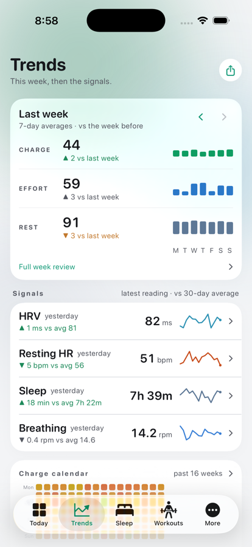

Debug build on the iPhone 17 Pro simulator with --demo-seed (the app's deterministic 120-day dataset). Same data paths as the shipping tabs; only the composition changed. The refinements from review are in: brighter secondary text, every value labelled with its window, bars only where a share of a target makes sense, the stage-coverage note beside the score, and one finding above the signals when something cleared a threshold (the demo data does not, so the tab shows none).







